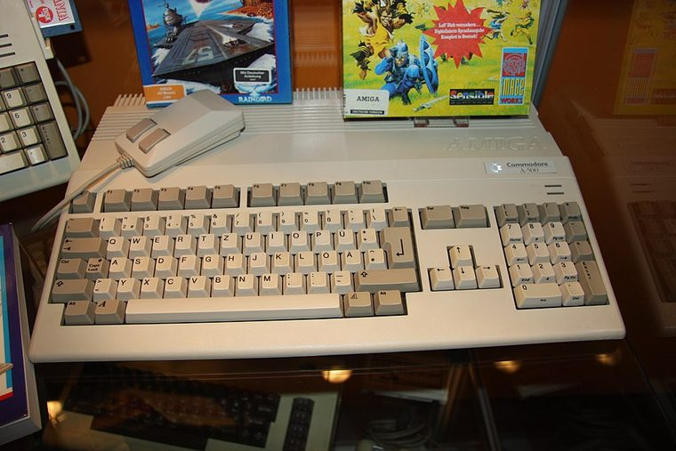

[ IDENTIFIED ENCLOSURE // COMMODORE AMIGA 500 (A500), 1987 ]
Commodore Amiga 500 Computer Case
About 406 × 316 × 77 mm (W × D × H) for the keyboard-computer shell; measure feet/keyboard shape on the individual unit.

REVISION / FIT CAVEAT: Distinguish A500 from A500 Plus (A500+) and later A600; board labels, trapdoor and ROM version identify upgrade state. Some cases/boards have region-specific RF shielding and keyboard membranes.
Model-specific mechanical record
| Catalog leaf | Vintage desktop and integrated computer systems |
|---|---|
| Identity / generation | Commodore Amiga 500 (A500), 1987 |
| Dimensions / clearance | About 406 × 316 × 77 mm (W × D × H) for the keyboard-computer shell; measure feet/keyboard shape on the individual unit. |
| Drive bays / mounts | One internal 3.5-inch floppy mechanism in standard A500; no 5.25-inch or PC-style internal bay. External drive units attach to the disk port. |
| Board / chassis compatibility | A500 motherboard revisions A500 through A500+ differ in memory/ROM layout and case/board details. Proprietary case, keyboard matrix and external PSU are not PC-compatible. |
| Revision identification | Distinguish A500 from A500 Plus (A500+) and later A600; board labels, trapdoor and ROM version identify upgrade state. Some cases/boards have region-specific RF shielding and keyboard membranes. |
Compatibility and preservation
A500 motherboard revisions A500 through A500+ differ in memory/ROM layout and case/board details. Proprietary case, keyboard matrix and external PSU are not PC-compatible.
Retain the trapdoor, shielding, keyboard springs and original feet. Check plastic screw posts for cracking; label daughterboards and RAM expansions before removal.
Before transfer or restoration, photograph the complete model label, assembly/board revisions, bay/backplane identifiers and included accessories. Measure the actual specimen when planning installation or shipping; nominal envelope figures may exclude protruding feet, rails, doors or cables.
Manufacturer manuals and archival sources
- Commodore Amiga 500 Service Manual (1990) — Internet ArchiveModel-specific manufacturer specification, service manual, or technical reference used for the listed dimensions and mechanical configuration.
- Amiga 500 User Manual — Internet ArchiveSupplemental model documentation or institutional/technical archival record; use the exact product code and manual revision for a specimen.
Listings distinguish base configuration from optional drive, PSU, fan, rack and accessory kits. Do not combine maximum capacities if cages or components occupy the same volume.